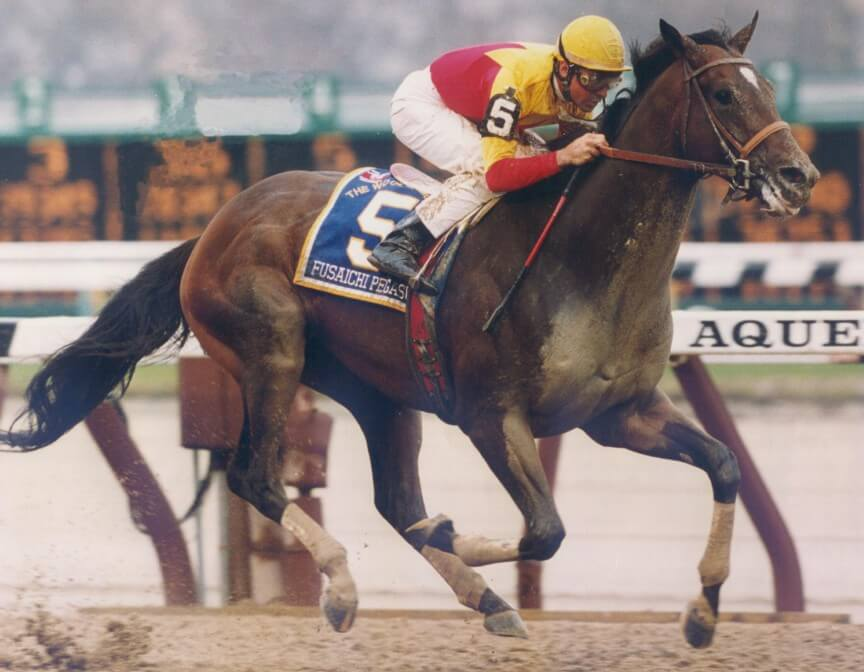
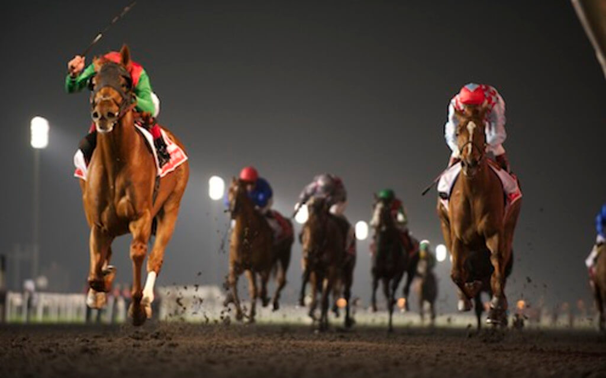
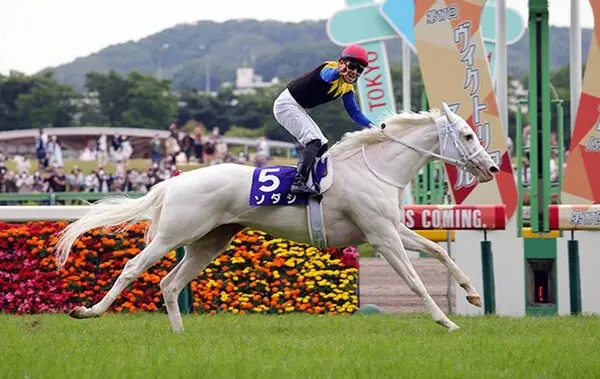

Koń Pełnej Krwi Angielskiej
|  |
Najdrożej sprzedany koń w historii to Fusaichi Pegasus. Zapłacono za niego 70 milionów dolarów, czyli w przeliczeniu 306,6 miliona złoty. |
|  |
Najlepiej płatna gonitwa to Dubai World Cup. Można w niej wygrać 2,4 mln dolarów. |
|  |
Konie pełnej krwi angielskiej zwykle wsytępują w maściach podstawowych, lecz zdarzają się nieliczne przypadki kiedy można spotkać wyjątki. Jednym z nich jest japońskiego pochodzenia Sodashi. Jest on maści cremello, w związku z czym jest albinosem. |